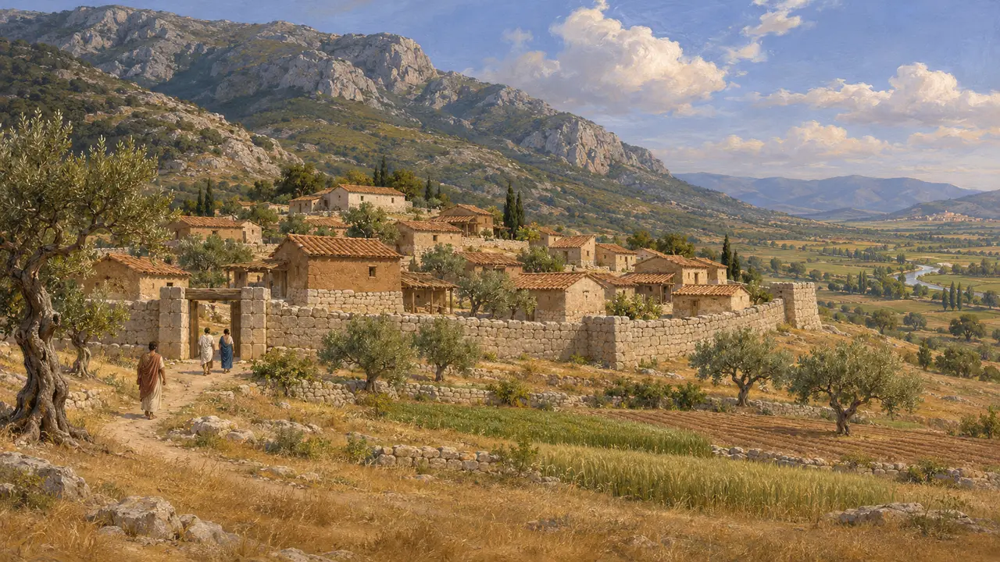
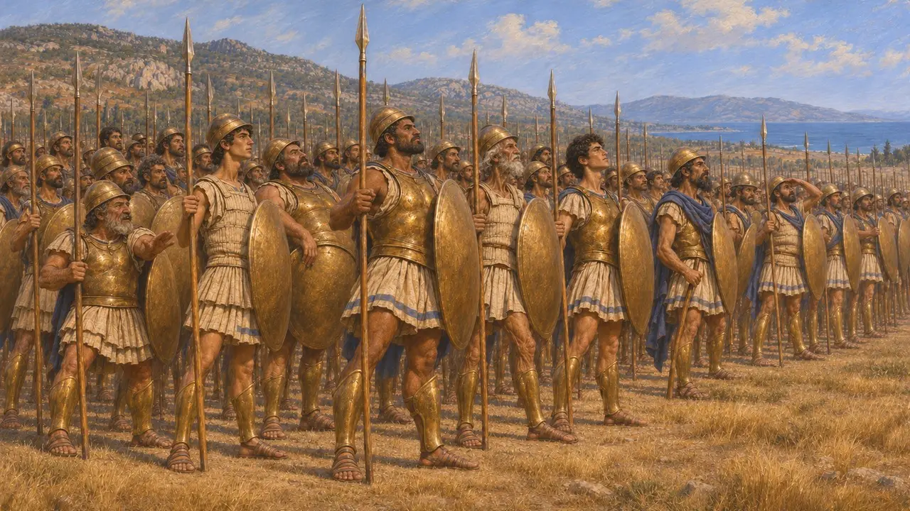
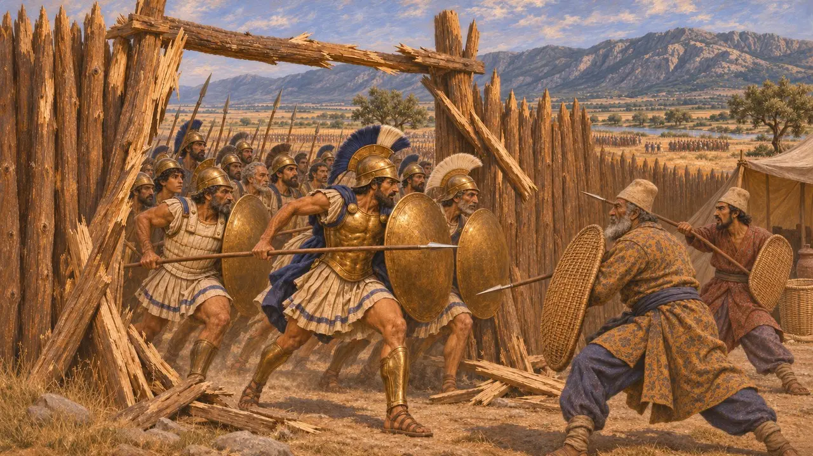
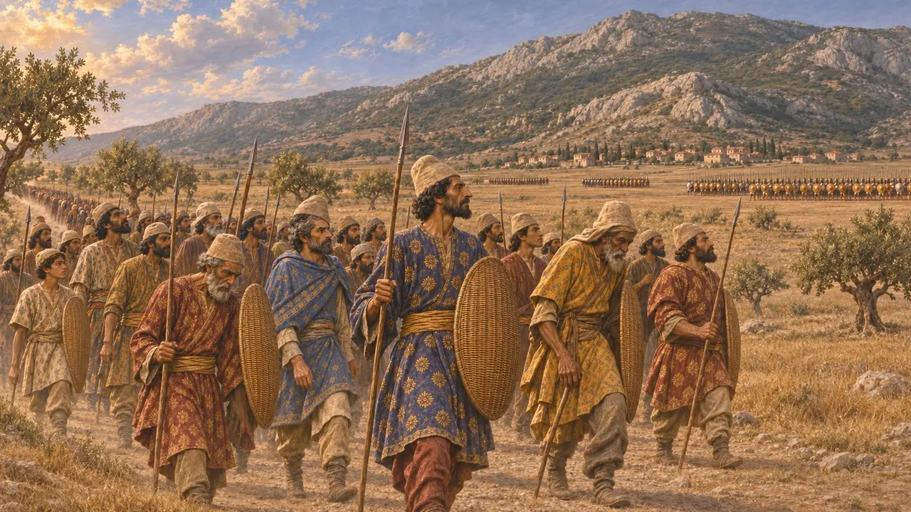
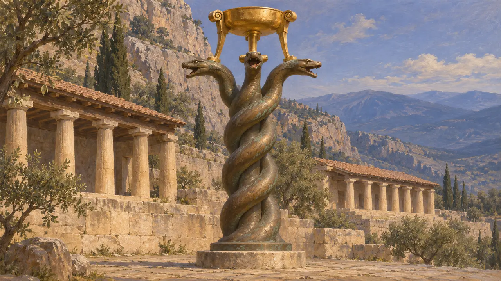

Plataiai
Böotische Stadt am Fuß des Kithairon, Schauplatz der Schlacht von 479 v. Chr.
Im Spiel: Level 11: Das Finale, Mykale
Plataiai war eine kleine böotische Stadt an den Nordhängen des Kithairon, nahe der Grenze zu Theben. Als treuer Verbündeter Athens schickte es 490 v. Chr. seine Männer in die Schlacht bei Marathon. 479 v. Chr. sah die Ebene unterhalb der Stadt die Niederlage und den Tod des Mardonios, womit der persische Landfeldzug gegen das griechische Festland endete.
Im Spiel: Plataiai ist der Schauplatz der elften Mission des Spiels im Jahr 479 v. Chr. Der Chronikeintrag folgt der griechischen Überlieferung, nach der Plataiai als einzige Stadt Athen bei Marathon Männer zu Hilfe schickte und Mardonios nahe der Stadt fiel.

Eine kleine Stadt an der Grenze zu Theben
Antiker BerichtPlataiai lag an den unteren Hängen des Kithairon über dem Tal des Asopos, nicht weit von Theben. Herodot berichtet, die Plataier hätten sich, von den Thebanern bedrängt, auf Rat des spartanischen Königs Kleomenes Athen unterstellt. Thukydides datiert das Bündnis auf 519 v. Chr., manche Historiker bevorzugen jedoch ein Datum um 509 v. Chr. Von da an war Plataiai an Athen gebunden und mit Theben verfeindet.
Herodotus 6.108; Thucydides 3.68

An der Seite Athens bei Marathon
Antiker BerichtHerodot berichtet, als die Athener 490 v. Chr. bei Marathon den Persern gegenüberstanden, seien ihnen die Plataier mit ihrem gesamten Aufgebot zu Hilfe gekommen. Andere griechische Verbündete nennt er nicht, und die Spartaner trafen erst nach der Schlacht ein. Die Plataier hielten den linken Flügel. Herodot fügt hinzu, dass der athenische Herold die Plataier fortan bei den alle vier Jahre gefeierten Festen der Athener in die Gebete einschloss.
Herodotus 6.108, 6.111, 6.120

Die Schlacht von 479 v. Chr.
Antiker BerichtIm Jahr 480 v. Chr. brannte das Heer des Xerxes Plataiai nieder, nachdem die Thebaner die Stadt als feindlich bezeichnet hatten. Im Jahr 479 v. Chr. lagerte Mardonios am Asopos und errichtete auf thebanischem Gebiet eine hölzerne Palisade. Es folgten Tage voller Gefechte, in denen der Befehlshaber seiner Reiterei, Masistios, fiel und die Griechen ihr Wasser verloren. Die Griechen unter Pausanias versuchten daraufhin einen nächtlichen Rückzug. Mardonios griff an und fiel im Kampf gegen die Spartaner und Tegeaten, und die Athener drangen in seine Festung ein.
Herodotus 8.50; Herodotus 9.15-70

Zahlen und die fehlende persische Stimme
UmstrittenHerodot beziffert das griechische Heer auf etwa 110.000 Mann und die asiatischen Truppen des Mardonios auf 300.000, dazu griechische Verbündete. Ihm zufolge überlebten davon weniger als 3.000, abgesehen von den 40.000, die Artabazos fortführte. Historiker halten seine Zahlen für die Perser für stark übertrieben, und moderne Schätzungen gehen weit auseinander. Keine persische Quelle erwähnt die Schlacht, daher beruht ihr Verlauf fast ganz auf griechischen Autoren, vor allem auf Herodot, der eine Generation später schrieb.
Herodotus 9.30, 9.32, 9.66, 9.70; P. Briant, From Cyrus to Alexander, 2002

Die Schlangensäule
Zeitgenössisch belegtAus der Beute weihten die Griechen in Delphi einen goldenen Dreifuß auf einer bronzenen Säule aus drei ineinander gewundenen Schlangen. Das Gold ist längst verschwunden, doch die Bronzesäule steht noch im Hippodrom von Istanbul, wohin sie unter Konstantin gebracht wurde. Auf ihren Windungen stehen die Namen von 31 griechischen Staaten, die gegen die Perser kämpften, darunter Plataiai.
Serpent Column, Hippodrome, Istanbul; Herodotus 9.81
Quellen
- Herodotus, Histories, books 6, 8 and 9
- Thucydides, History of the Peloponnesian War, books 1-3
- M. A. Flower and J. Marincola, Herodotus: Histories Book IX, 2002
- P. Briant, From Cyrus to Alexander, 2002
- Serpent Column (Delphi dedication), Hippodrome, Istanbul